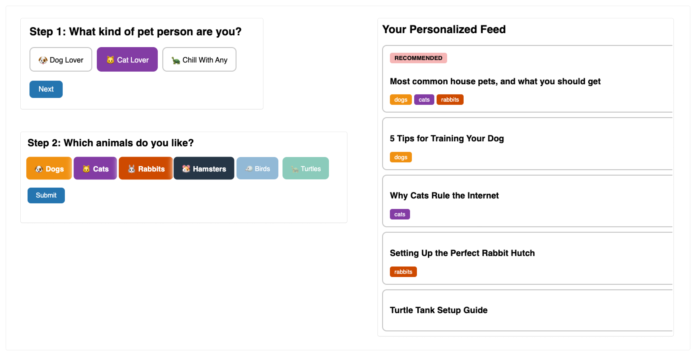
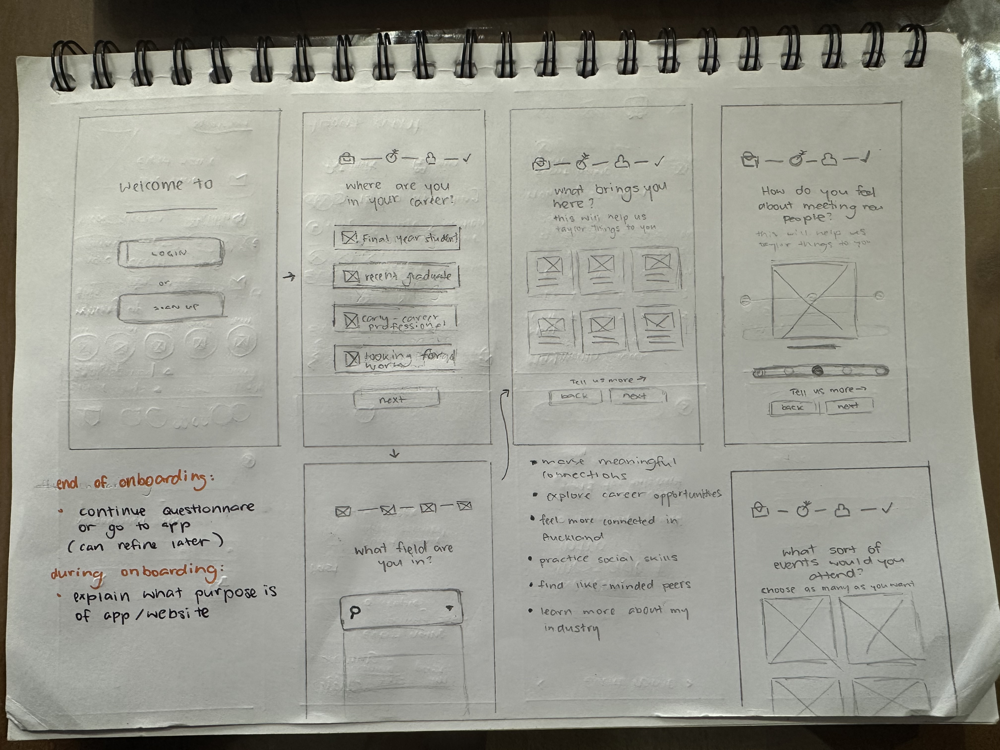
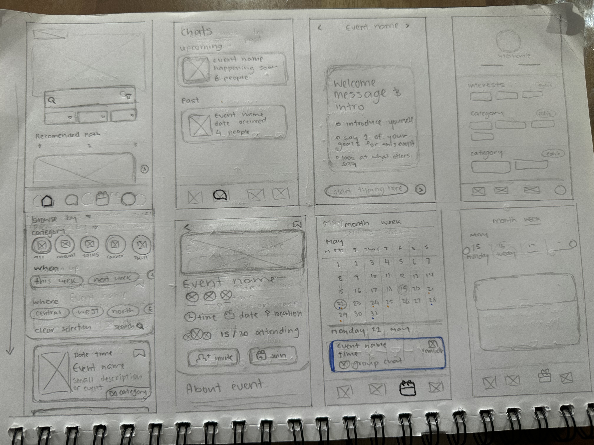
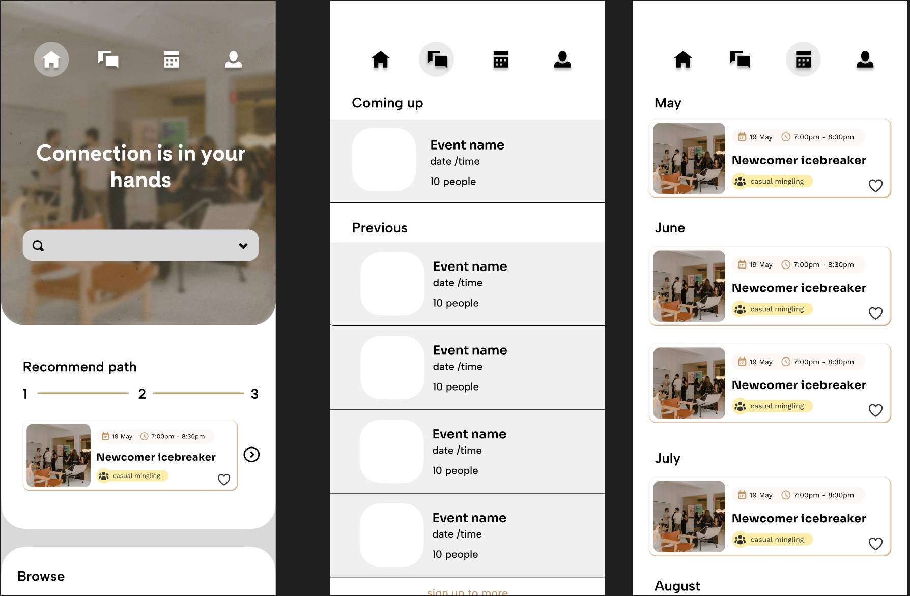
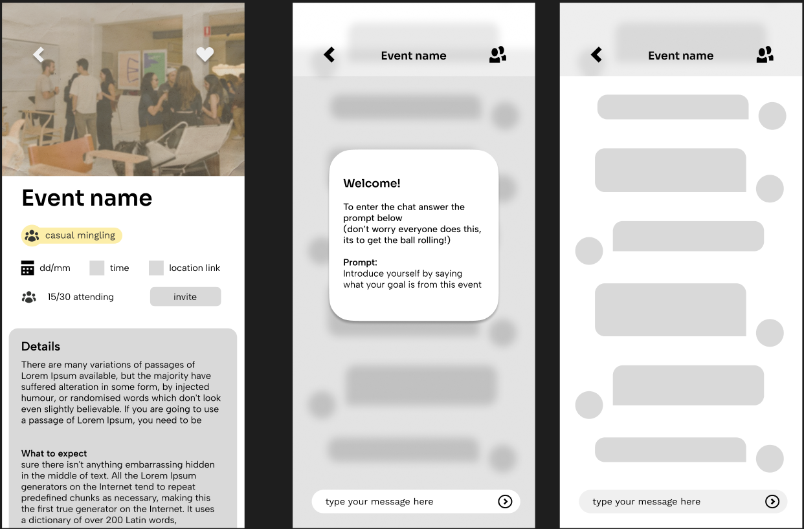

Proof of concept

Using java script and some css I mocked up how my java script would opperate to
(1) have questions that swap over
(2) the recommended page is ordered by most relevant informartion based on the users decisions from the on-boarding questions
paper prototypes


I started off with paper prototypes to get a general understanding of how I wanted to lay out my pages, and what pages needed to be done before I started mocking them up on figma
Lo-fi


Following my paper prototyping I went on to do a rough layout idea on figma to see how things should be layed out properly. As it is a mobile first website, due to the target audience being younger and more likely using mobile, I started off by mocking things up in mobile sizing.
From here I will conduct my user testing next week to see if its intuitive and what the users I tet on think of the layouts